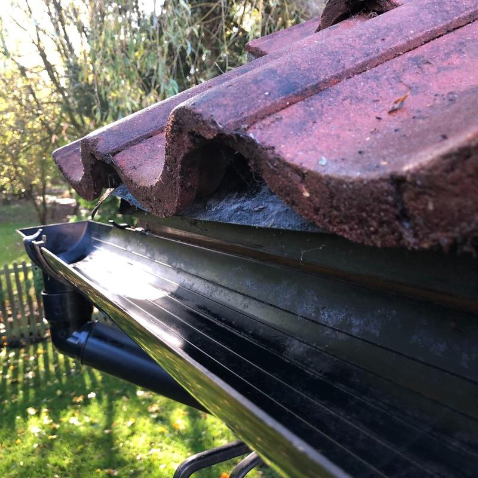
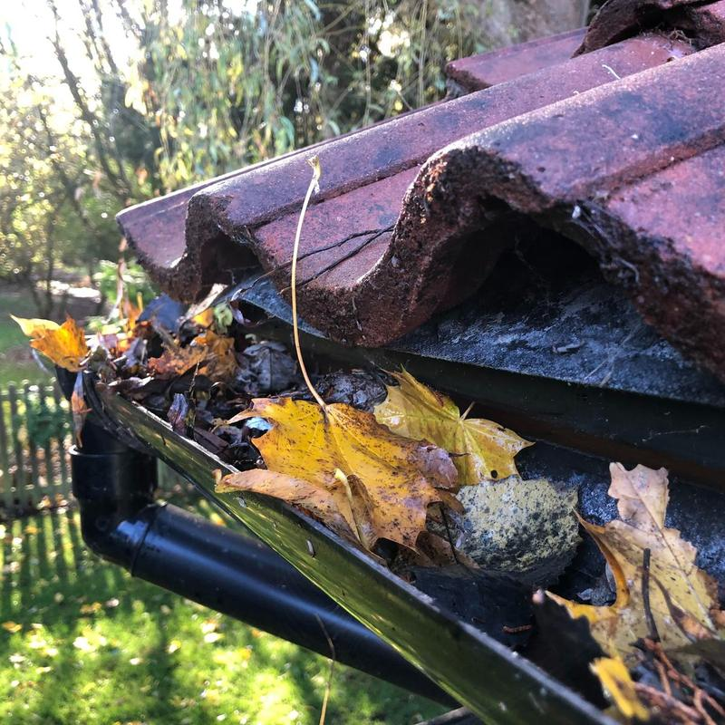
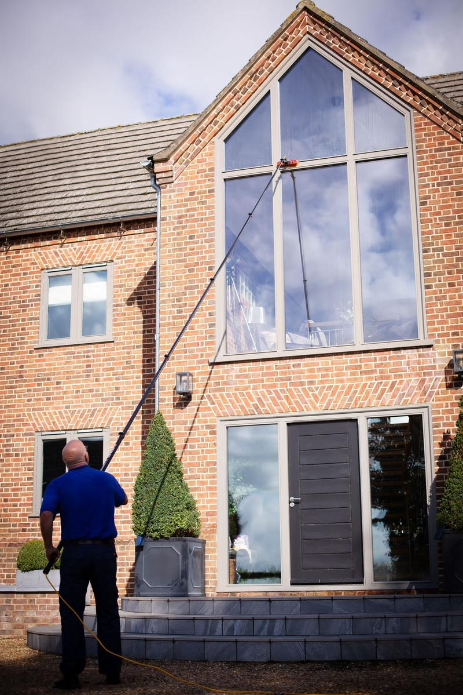

Home / Gutter Clearance
Gutter clearance in Watton, Thetford & surrounding areas
Blocked gutters overflow, cause damp and can damage brickwork and fascias. Every gutter is inspected and cleaned out by hand, and photos are available on request.
Gutters emptied from £50
- 5.0 on Google from 50+ reviews
- Fully insured with public liability cover
- 10+ years in the trade
- Free re-clean if you are not happy within 24 hours
What's included
- Gutters emptied and cleaned out by hand
- Every gutter inspected as we go
- Leaves, moss and debris removed
- Before and after photos on request
- Competitive pricing and clear quotes
Autumn is the time to book
Once the leaves are down, a clear keeps rainwater flowing through the winter instead of spilling down your walls.
Gutters emptied from £50
Book a gutter clearBefore and after, cleared by hand
Drag the handle to compare. Ask for photos of your own gutters when Andrew visits.
Signs your gutters need clearing
- Water spilling over the edge when it rains
- Plants or moss growing out of the gutter
- Damp patches or stains on outside walls
- Gutters sagging or pulling away from the fascia


How booking works
Get in touch
Tell us what you need using the form, or give Andrew a call.
Get your quote
We can arrange a free visit, or you can simply send us photos of the property.
Book a date
Choose the services you'd like and we'll book a date that suits you.
Stay informed
You'll get a reminder the day before each clean, and a message when it's done.

Why people choose KAT
- Careful, hands-on cleaning, never rushed
- Fully insured with full public liability cover
- Over a decade of experience
- 5.0 rating from 50+ Google reviews
Questions people ask
How much does gutter clearance cost?
Gutters are emptied from £50. The final price depends on the size of the property and the length of guttering, and we always confirm it before we start.
How often should gutters be cleared?
Most homes benefit from a clear at least once a year, ideally after the autumn leaves have fallen. Homes near trees may need it more often.
How do you clean the gutters?
Every gutter is inspected and cleaned out by hand, so nothing is missed.
Can I see the results?
Yes. Photos are available on request, so you can see your gutters are clear.
Where we work
- Watton
- Thetford
- Swaffham
- Attleborough
- Hingham
- Great Hockham
Based in Watton, covering the surrounding villages too. Not sure if you're in the area? Give Andrew a call.
Get a free quote
Tell us a little about the property and Andrew will reply with a price. Most quotes can be done from photos.